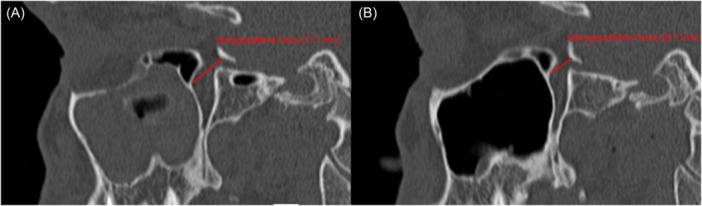
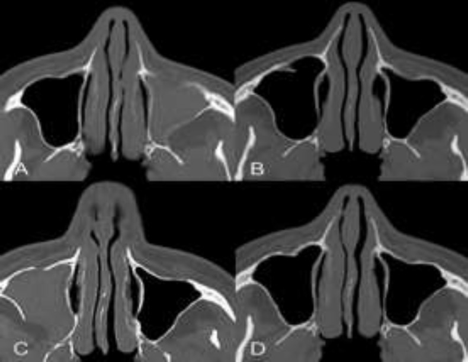
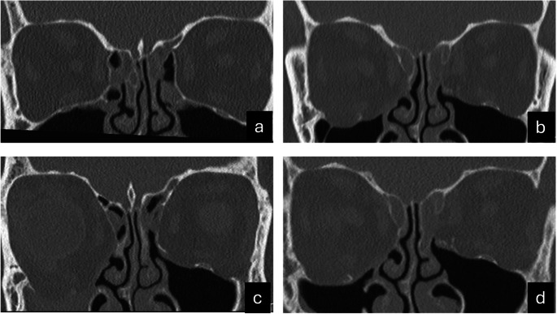
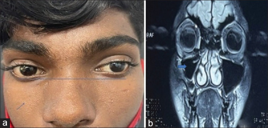
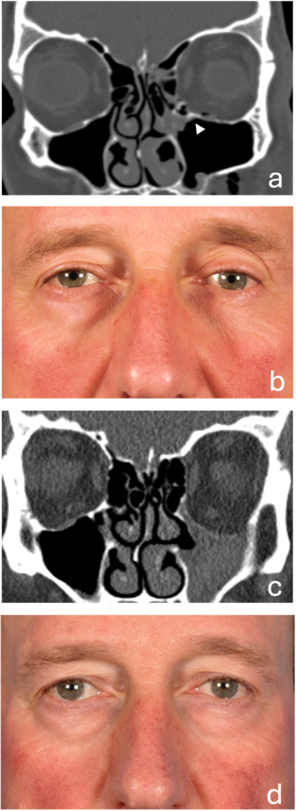
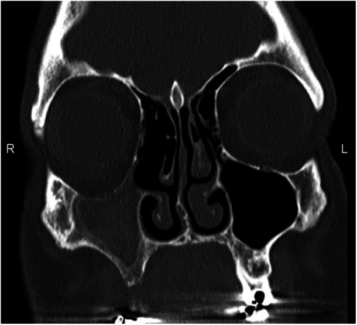

3248 — Hội chứng xoang câm (silent sinus syndrome, "imploding antrum"): xoang hàm xẹp kéo sàn hốc mắt xuống — mắt tụt, KHÔNG lồi / Silent sinus syndrome
Tags: pattern:xoang-xep pattern:mo-xoang pattern:san-hoc-mat-ha pattern:enophthalmos pattern:hypoglobus pattern:retroantral-fat pattern:lech-vach-mui vung:mat vung:hoc-mat vung:xoang protocol:CT-xoang-hoc-mat protocol:MRI-hoc-mat incidentaloma:khong
Mức chắc chắn (certainty): tổng hợp y văn (literature synthesis) — dựng từ tổng quan hệ thống 153 bài / 558 bệnh nhân (PMID 37219052), tổng quan 28 nghiên cứu / 276 bệnh nhân (PMC9577692), đoàn hệ đo hình ảnh 30 bệnh nhân (PMC12955829), đoàn hệ mổ nội soi theo dõi 4,71 năm ở 24 bệnh nhân (PMC13399144), loạt 9 ca SSS thứ phát sau chấn thương/mổ (PMC12098178), nghiên cứu 891 phim CT về tần suất (PMID 34236252) và các ca báo cáo có số liệu (PMC7302533, PMC10062103, PMC11214768). Nhóm không có bệnh nhân của mình; số nào chưa kiểm chứng ghi "chưa rõ". Không ghi tên tác giả — attribution dùng tạp chí + năm + PMCID/PMID (đối chiếu Europe PMC ngày 2026-11-21).
Vị trí trong thư viện: 3241 trả lời xoang mờ + khối đẩy xương RA → lồi mắt; bài này là chiều NGƯỢC LẠI: xoang xẹp, xương cong VÀO, sàn hốc mắt hạ xuống → enophthalmos/hypoglobus. 410 là bảng giải phẫu hốc mắt (đã có một dòng về "xoang hàm kém phát triển"); 3229 là mặt thiếu thể tích hốc mắt sau múc nhãn cầu; 3245 và 400 là các bài mắt liên quan.
Câu chốt: (1) Đây là bệnh của ÁP LỰC ÂM, không phải của khối u: bít lỗ thông xoang → khí bị hấp thu → áp lực trong xoang thấp hơn khí quyển → thành xoang cong vào lòng, xoang mất 8,885 mL thể tích (10,057 vs 18,942 mL, p < 0,01) (PMC12955829). (2) Hình ảnh chốt là CT xương lát ≤ 1 mm, coronal: xoang hàm mờ hoàn toàn, xoang thu nhỏ, uncinate ra ngoài, sàn hốc mắt hạ và mỏng ~1,05 mm, cộng vách mũi lệch VỀ phía xoang bệnh ở 87% (PMC12955829) — không có khối đặc, không tiêu xương nham nhở. (3) Điều trị là MỞ THÔNG xoang (uncinectomy + middle meatal antrostomy), không phải "nâng sàn" ngay: 87% bệnh nhân được FESS, chỉ 23,5% cần tái tạo sàn hốc mắt; sau điều trị enophthalmos giảm từ 2,67 ± 1,39 mm còn 0,33 ± 0,75 mm, hypoglobus từ 2,22 ± 1,43 mm còn 0,23 ± 0,62 mm, 83,2% hết hoặc giảm triệu chứng (PMID 37219052).
1. Tổng quan bệnh học – cơ chế hình ảnh (TẠI SAO)
1.1 "Xoang câm" là gì và vì sao nó kéo mắt xuống
Hội chứng xoang câm (silent sinus syndrome, SSS; còn gọi imploding antrum syndrome) là tình trạng xoang hàm xẹp dần, không triệu chứng mũi xoang, gây enophthalmos (mắt tụt) và hypoglobus (nhãn cầu thấp hơn bên lành), do sàn hốc mắt bị kéo cong xuống vào lòng xoang đang giảm áp (PMC9577692, PMC12955829). Bệnh nằm trong phổ của teo xoang hàm mạn (chronic maxillary atelectasis, CMA); nhiều tác giả coi SSS = CMA giai đoạn III (khi đã có biến dạng lâm sàng), nhưng danh pháp vẫn còn tranh cãi (PMC12955829).
Cơ chế được chấp nhận rộng nhất gồm 4 bước:
- Bít lỗ thông tự nhiên (ostium) của xoang hàm — do uncinate ra ngoài, phì đại niêm mạc, biến thể giải phẫu (concha bullosa), hoặc di chứng chấn thương/mổ vùng lỗ thông (PMC12955829, PMC12098178).
- Giảm thông khí → khí trong xoang (O₂, N₂) bị niêm mạc hấp thu, không được bù.
- Áp lực trong xoang thấp hơn khí quyển → chênh áp kéo thành xoang mỏng nhất vào trong: thành trong, thành sau, rồi sàn hốc mắt.
- Tái tạo xương dưới áp lực âm kéo dài → xương mỏng dần (sàn hốc mắt còn ~1,05 mm), có thể nứt/khuyết; mô mỡ hốc mắt và mỡ sau xoang lấp vào khoảng trống (PMC12955829).
Giả thuyết thứ hai (Baujat, cơ học) cho rằng co cơ nhai tạo áp lực âm trong hõm chân bướm–khẩu cái, đẩy mỡ hốc mắt ra sau rồi thành sau xoang cong vào — chưa có nghiên cứu phân xử hai giả thuyết (PMC12955829 dẫn lại).
Vì sao bệnh "câm": bệnh nhân không đau, không chảy mũi, không sốt; cái họ thấy là mắt như tụt vào, rãnh mi trên sâu hơn, mặt hơi lệch, đôi khi nhìn đôi khi nhìn lên. Vì vậy người khám mắt là người phát hiện, còn xoang là nơi gây bệnh — đúng lý do bài này nằm trong tab Mắt.
1.2 TẠI SAO hình ảnh trông như vậy — vật lý và mô bệnh
| Dấu hiệu trên hình ảnh | Vì sao (cơ chế vật lý/mô bệnh) | Hệ quả khi đọc phim |
|---|---|---|
| Xoang hàm mờ hoàn toàn | Lòng xoang chứa dịch–nhầy thay vì khí: dịch/mucin có độ hấp thụ tia X gần nước, khoảng 0–30 HU, so với khí −1.000 HU | Mờ đồng nhất, không có nốt đặc, không vôi hóa trong lòng; nếu có phần đặc/ngấm phải nghĩ u hoặc mucocele |
| Thể tích xoang giảm | Thành xoang cong vào lòng do chênh áp; đo bằng phân đoạn 3D trên DICOM | Xoang bệnh 10,057 ± 6,222 mL vs bên lành 18,942 ± 7,992 mL; chênh 8,885 mL (PMC12955829) |
| Sàn hốc mắt hạ + mỏng | Sàn là xương mỏng nhất giữa xoang và hốc mắt (~1,05 mm), chịu lực uốn lớn nhất; áp lực âm + hủy xương do hủy cốt bào làm xương mỏng, cong xuống | Đo chiều cao hốc mắt (trần→nhãn cầu + nhãn cầu→sàn): 16,95 ± 2,793 mm vs 14,81 ± 2,282 mm (p = 0,003) — tức hốc mắt sâu thêm ~2,1 mm; độ dày sàn không khác có ý nghĩa (1,054 vs 1,154 mm, p = 0,476) |
| Nhãn cầu tụt xuống, không lồi | Hốc mắt tăng thể tích phía dưới + sàn hạ → nhãn cầu trượt xuống; trục nhãn cầu không bị đẩy ra trước | Khoảng cách sàn hốc mắt → nhãn cầu: 9,527 ± 2,0 mm vs 7,861 ± 1,74 mm (p = 0,001); khoảng cách trần → nhãn cầu không đổi (p = 0,276) → hốc mắt sâu xuống, không nông ra (PMC12955829) |
| Mỡ sau xoang ("retroantral fat pad") + hõm chân bướm–khẩu cái rộng ra | Thành sau xoang cong ra trước, nhường chỗ cho mỡ vùng chân bướm–khẩu cái và hố chân bướm–khẩu cái bị đẩy vào | Hõm rộng thêm 2,354 mm (10,7 vs 8,346 mm), củ xương hàm cao thêm 4,99 mm (17,98 vs 12,99 mm), thành sau lồi vào 3,763 mm (p < 0,01) — giải thích vì sao phẫu thuật viên gặp mỡ trong xoang dù KHÔNG vào hốc mắt |
| Vách mũi lệch VỀ phía xoang bệnh | Xoang nhỏ kéo cả khối xương–niêm mạc về phía mình; 87% (26/30) ca có lệch vách kiểu này | Lệch vách về phía xoang xẹp là dấu phụ rất hữu ích khi hai xoang khác nhau rõ; lệch ra xa xoang xẹp phải nghĩ nguyên nhân khác |
| MRI: dịch T2 rất sáng, niêm mạc T2 trung gian, không hạn chế khuếch tán | Nước tự do kéo dài T2; niêm mạc dày viêm mạn ngấm thuốc mỏng; không có mô đặc nên ADC không tối | Dùng để loại u và xem cơ vận nhãn/thị thần kinh khi hypoglobus nhiều; mỡ hõm chân bướm–khẩu cái T1 sáng, tắt trên fat-sat |
- Vì sao gọi là "silent" mà vẫn nguy hiểm: bệnh tiến triển chậm nhiều năm, không đau, nên bệnh nhân đến khi biến dạng đã cố định; sàn hốc mắt mỏng ~1 mm cũng là nguy cơ vào hốc mắt khi mổ nội soi — đây là lý do bài này nhấn mạnh đo trước mổ chứ không chỉ đặt tên bệnh (PMC12955829).
1.3 Ngưỡng định lượng nằm lòng
| Chỉ số | Giá trị | Nguồn |
|---|---|---|
| Tuổi trung bình khi chẩn đoán | 38,8 ± 14,1 tuổi (558 bệnh nhân); 40,4 tuổi (276 bệnh nhân); 44,9 tuổi (30 ca); 45,2 ± 12,8 tuổi, khoảng 33–67 (24 ca) | PMID 37219052; PMC9577692; PMC12955829; PMC13399144 |
| Tần suất trên phim CT người lớn không có tiền sử chấn thương/mổ | SSS 0,56% (5/891); thiểu sản xoang hàm (MSH) 6,17% (55/891); báo cáo X-quang chỉ ghi nhận 1/5 ca SSS | PMID 34236252 |
| Phân bố bên | Phải 60% (18/30); trong đoàn hệ khác: phải 45,8%, trái 45,8%, hai bên 8,3% (2/24) | PMC12955829; PMC13399144 |
| Thể tích xoang hàm | Bệnh 10,057 ± 6,222 mL vs lành 18,942 ± 7,992 mL, chênh 8,885 mL | PMC12955829 |
| Đường kính xoang | Sagittal 31,4 vs 36,93 mm; coronal 18,82 vs 25,05 mm | PMC12955829 |
| Sàn hốc mắt | Độ dày 1,054 vs 1,154 mm (p = 0,476); chiều cao hốc mắt 16,95 vs 14,81 mm (p = 0,003) | PMC12955829 |
| Hõm chân bướm–khẩu cái + củ xương hàm | Rộng thêm 2,354 mm; cao thêm 4,99 mm; thành sau lồi vào 3,763 mm | PMC12955829 |
| Lệch vách mũi về phía xoang bệnh | 87% (26/30) | PMC12955829 |
| Triệu chứng hốc mắt | Enophthalmos và/hoặc hypoglobus 83,3%; hypoglobus 66,7%; nhìn đôi 8/9 ca SSS thứ phát | PMC13399144; PMC12098178 |
| Đo lâm sàng | Enophthalmos 2,67 ± 1,39 mm → 0,33 ± 0,75 mm; hypoglobus 2,22 ± 1,43 mm → 0,23 ± 0,62 mm sau điều trị | PMID 37219052 |
| Điều trị | FESS 87% + tái tạo sàn hốc mắt 23,5%; 83,2% hết/giảm triệu chứng | PMID 37219052 |
| FESS đơn thuần | 116 bệnh nhân; còn enophthalmos 6%; 3,4% phải mổ tái tạo sàn sau đó; 72 ca FESS + tái tạo sàn; 57 ca theo dõi | PMC9577692 |
| Theo dõi dài hạn sau FESS | 24 ca, theo dõi 4,71 ± 3,45 năm (1,0–13,2): 100% hết triệu chứng, 0 mổ lại, 1 ca (4,2%) tái tạo sàn, QoL 4,58/5 | PMC13399144 |
| SSS thứ phát (sau chấn thương/mổ) | 9 ca, xuất hiện 1–36 tháng sau chấn thương/mổ, trung vị 3 tháng ở nhóm sau chấn thương | PMC12098178 |
| Thể không mờ xoang | 3 ca SSS có xoang còn thông khí — không được loại trừ chỉ vì xoang sáng | PMID 29726628 |
2. Mẫu hình + chẩn đoán phân biệt theo vị trí (gamut)
Mẫu hình chung: xoang hàm mờ + nhỏ + thành cong vào lòng (đặc biệt sàn hốc mắt hạ xuống) + uncinate ra ngoài + mắt tụt xuống, không lồi, không triệu chứng mũi xoang, thường một bên, người 30–60 tuổi.

| Vị trí / thể | Đường lan và dấu hiệu | Chốt hình ảnh |
|---|---|---|
| Xoang hàm (điển hình) | Sàn hốc mắt hạ → hypoglobus (mắt thấp), enophthalmos, rãnh mi trên sâu | Xoang hàm mờ + thể tích giảm, uncinate ra ngoài, sàn hốc mắt hạ/mỏng, vách mũi lệch về xoang bệnh |
| Xoang trán (hiếm) | Trần hốc mắt hạ → hyperglobus (mắt cao) + enophthalmos, bất đối xứng sống mũi | Xoang trán mờ + xẹp, vách mũi xương lệch nặng về bên bệnh; ca 23 tuổi, nhiều chấn thương mũi thời thơ ấu (PMC11723780) |
| Hai bên (8,3%) | Có thể đồng thời hoặc lần lượt (metachronous) | Ca 45 tuổi: SSS trái, sau mổ thông xoang 2 năm xuất hiện SSS phải; CT axial cho thấy mỡ sau xoang tăng + mỏng thành trước–bên rồi thông khí lại sau FESS (PMC7302533) |
| Thứ phát sau chấn thương/mổ (secondary SSS) | Sau gãy sàn hốc mắt, gãy gò má, hoặc giải ép hốc mắt → bít lỗ thông; xuất hiện 1–36 tháng | CT lúc chấn thương: mờ vùng infundibulum (dấu sớm); CT sau: mờ toàn bộ + uncinate ra ngoài + sàn hạ (PMC12098178) |
| Không mờ xoang (aerated SSS) | Vẫn có enophthalmos + sàn hạ + uncinate ra ngoài nhưng xoang còn khí | 3 ca; không loại trừ SSS khi xoang sáng (PMID 29726628) |
Gamut "mắt tụt + xoang hàm mờ/xẹp" (theo thứ tự thường gặp):
- Hội chứng xoang câm — xoang mờ, thể tích giảm, sàn hạ, không khối, không triệu chứng mũi.
- Thiểu sản xoang hàm bẩm sinh (maxillary sinus hypoplasia) — xoang nhỏ từ nhỏ, 96,36% vẫn thông khí bình thường/một phần, thường không có triệu chứng hốc mắt; là nền cho SSS chứ không đồng nghĩa SSS (PMID 34236252).
- Di chứng gãy sàn hốc mắt cũ — sàn hạ nhưng xoang thông khí, có đường gãy/dính mô mỡ vào xoang, tiền sử chấn thương rõ.
- Teo mỡ hốc mắt (tuổi, xơ cứng bì, sau xạ, HIV) — xoang bình thường, hốc mắt rỗng hơn, không có bất thường xương hàm.
- Viêm mạch u hạt (GPA/ANCA) gây xẹp xoang — có triệu chứng mũi xoang, chảy máu mũi, tổn thương thận, mô bệnh hoại tử + viêm mạch + tế bào khổng lồ (PMC11214768).
- Nang nhầy xoang (mucocele) — ngược chiều: xoang giãn, xương đẩy RA, lồi mắt (bài 3241).
- U xoang co kéo/xâm lấn (hiếm) — tiêu xương nham nhở, phần đặc ngấm thuốc, có thể chảy máu mũi; phải MRI + sinh thiết.
3. Bảng so sánh phân biệt (ma trận đối chiếu)
| Thực thể (entity) | Hình ảnh điển hình (CT / MRI) | Chốt vào (rule-in) | Chốt loại (rule-out) | Gợi ý xác nhận |
|---|---|---|---|---|
| Hội chứng xoang câm (SSS) | CT ≤ 1 mm coronal: xoang hàm mờ đồng nhất, thể tích giảm (10,06 vs 18,94 mL), uncinate ra ngoài, sàn hốc mắt hạ + mỏng ~1,05 mm, vách lệch về xoang bệnh 87%; MRI: dịch T2 rất sáng, không khối | Enophthalmos/hypoglobus + xoang hàm mờ nhỏ + sàn hạ + uncinate ra ngoài + không khối | Không có phần đặc ngấm; không tiêu xương nham nhở; không lồi mắt | CT coronal ≤ 1 mm + đo thể tích; Hertel; nội soi mũi thấy uncinate ra ngoài |
| Thiểu sản xoang hàm bẩm sinh (MSH) | Xoang nhỏ, thành dày, thường còn thông khí; không cong sàn rõ | Xoang nhỏ từ nhỏ + 96,36% còn thông khí + không triệu chứng hốc mắt | Không có hội chứng hốc mắt tiến triển; không mỡ sau xoang tăng | So phim cũ; đối chiếu hai bên; theo dõi |
| Di chứng gãy sàn hốc mắt cũ | Sàn hạ, mô mỡ/thoát vị vào xoang, đường gãy xương, xoang thông khí | Tiền sử chấn thương + đường gãy + mỡ trong xoang | Không có xoang mờ thu nhỏ kiểu áp lực; không uncinate ra ngoài đơn thuần | CT coronal + so phim chấn thương; hỏi tiền sử |
| Teo mỡ hốc mắt | Hốc mắt rỗng, xoang hàm bình thường, không hạ sàn | Enophthalmos + xoang bình thường + mô mỡ hốc mắt giảm | Không có bất thường xoang–xương | MRI hốc mắt T1 fat-sat; loại trừ bệnh hệ thống |
| GPA/viêm mạch gây xẹp xoang | Xoang mờ + xẹp + dày niêm mạc, phá xương, có thể tổn thương mũi–thận | Triệu chứng mũi xoang + chảy máu mũi + ANCA (+) + sinh thiết viêm mạch/hoại tử | Không "câm" hoàn toàn; không chỉ có xẹp đơn thuần | c-ANCA/PR3, sinh thiết, xét nghiệm thận |
| Nang nhầy xoang (mucocele) | Xoang giãn, xương mỏng/tiêu đều, khối dịch 0–20 HU, lồi mắt | Khối dịch đẩy xương RA + lồi mắt + liên tục xoang | Không xoang thu nhỏ; không mắt tụt | MRI T2 fat-sat; nội soi xoang |
| U xoang (ung thư/papilloma) | Khối đặc ngấm không đều, tiêu xương nham nhở, có thể vôi hóa; xoang không nhỏ đều | Phần đặc + tiêu xương không đều + chảy máu mũi | Không phải dịch đồng nhất; không thành xoang cong đều kiểu áp lực | MRI + nội soi sinh thiết; PET/CT khi nghi ác |
- Ảnh ghép đối chiếu:
images/composite_xoang-cam_CT.jpg— hai đường vào của cùng cơ chế bít lỗ thông: SSS sau mổ giải ép hốc mắt (iatrogenic, coronal) và SSS hai bên lần lượt, tái thông sau FESS (axial); tạo bằngtools/make_composite.py, giữ nguyên tỷ lệ, dải đen ghi attribution.
4. Protocol chụp + hệ phân độ/điểm chuẩn hóa
4.1 Protocol
| Bước | Nội dung | Vì sao |
|---|---|---|
| CT xoang–hốc mắt | Lát ≤ 1 mm, axial + coronal MPR, cửa sổ xương + mô mềm, không cản quang mặc định | Sàn hốc mắt chỉ dày ~1 mm; chỉ lát mỏng + coronal mới thấy cong xuống, mỏng, nứt và uncinate ra ngoài |
| Đo trên CT | Thể tích xoang (phân đoạn 3D); đường kính sagittal/coronal; chiều cao hốc mắt; độ dày sàn; bề rộng hõm chân bướm–khẩu cái + chiều cao củ xương hàm ở lát sagittal ngang lỗ tròn | Bộ số này phân biệt xẹp do áp lực với thiểu sản bẩm sinh và cho biết nguy cơ vào hốc mắt khi FESS (PMC12955829) |
| MRI hốc mắt | T1W, T2W fat-sat, T1W fat-sat sau tiêm, DWI/ADC; FOV hốc mắt, lát 2–3 mm | Khi có phần đặc/thành dày không đều, khi hypoglobus nhiều cần xem cơ vận nhãn/thị thần kinh, hoặc trước mổ tái tạo sàn |
| Mắt | Hertel exophthalmometry (chênh ≥ 2 mm là đáng kể), đánh giá hypoglobus, nhìn đôi khi nhìn lên, thị lực, vận nhãn | Enophthalmos trung bình 2,67 mm, hypoglobus 2,22 mm (PMID 37219052); đo lâm sàng là mốc theo dõi sau FESS |
| Tai mũi họng | Nội soi mũi: uncinate ra ngoài, hẹp infundibulum, concha bullosa, polyp; không cần sinh thiết nếu hình ảnh điển hình | Xác nhận cơ chế bít lỗ thông và lập kế hoạch uncinectomy + middle meatal antrostomy |
Không chọc hút xoang khi nghi SSS (không giải quyết lỗ thông, có thể làm nhiễm); không "nâng sàn" ngay khi chưa mở thông xoang — vì nguyên nhân là áp lực âm, không phải sàn yếu đơn thuần.
4.2 Phân độ và ngưỡng xử trí
- Teo xoang hàm mạn (CMA) I–III: giai đoạn I–II mô tả thay đổi giải phẫu; giai đoạn III thêm biến dạng lâm sàng (hypoglobus/enophthalmos) → SSS được coi là CMA III; danh pháp chưa thống nhất giữa các trường phái (PMC12955829).
- Đề xuất hệ phân độ hợp nhất 2024 gộp SSS và CMA (DOI 10.1002/alr.23342) — mới, chưa được dùng rộng rãi, và các đoàn hệ 2026 vẫn dùng cách chia CMA/de Dorlodot (PMC12955829, PMC13399144).
- Chỉ định mổ: có triệu chứng hốc mắt (enophthalmos/hypoglobus rõ, nhìn đôi) hoặc bệnh đang tiến triển trên phim; không triệu chứng + biến dạng nhẹ → có thể theo dõi (trong tổng quan có 57 bệnh nhân được "wait & see") (PMC9577692, PMC10062103).
- Chọn phẫu thuật: FESS (uncinectomy + middle meatal antrostomy) là bước đầu — đơn thuần đủ ở 116 bệnh nhân, chỉ 6% còn enophthalmos và 3,4% phải tái tạo sàn sau đó (PMC9577692); đoàn hệ 24 ca: 100% hết triệu chứng, 0 mổ lại, tái tạo sàn 1 ca (4,2%) (PMC13399144).
- Tái tạo sàn hốc mắt (PEEK/titanium/ghép tự thân): dành cho enophthalmos/hypoglobus tồn tại sau khi xoang đã thông, hoặc biến dạng nặng ngay từ đầu; một thì hay hai thì chưa có chuẩn — không có ngưỡng mm nào được nghiên cứu xác lập (PMC9577692 nêu rõ).
- Không có "phân độ RADS" cho SSS; theo dõi bằng Hertel + ảnh + triệu chứng, không cần chụp lại thường quy nếu không triệu chứng.
flowchart TD
A[Mắt tụt xuống + rãnh mi trên sâu<br/>không lồi, không đau] --> B[CT xoang-hốc mắt lát ≤ 1 mm<br/>coronal + cửa sổ xương]
B --> C{Xoang hàm mờ + nhỏ +<br/>sàn hốc mắt hạ + uncinate ra ngoài?}
C -->|Không| D[Xem gamut khác:<br/>mucocele 3241, gãy sàn cũ, teo mỡ, u xoang]
C -->|Có| E{Có phần đặc, tiêu xương nham nhở,<br/>chảy máu mũi?}
E -->|Có| F[MRI + sinh thiết: loại u/GPA]
E -->|Không| G{Có triệu chứng hoặc<br/>biến dạng tiến triển?}
G -->|Không| H[Theo dõi: Hertel + ảnh,<br/>hẹn khám mắt-TMH]
G -->|Có| I[FESS: uncinectomy +<br/>middle meatal antrostomy]
I --> J[Đánh giá lại 3-6 tháng:<br/>Hertel, nhìn đôi, ảnh]
J --> K{Còn enophthalmos/hypoglobus<br/>hoặc nhìn đôi?}
K -->|Không| L[Theo dõi dài hạn]
K -->|Có| M[Tái tạo sàn hốc mắt:<br/>PEEK/titanium/ghép tự thân]
5. Biến thể bình thường và cạm bẫy
- Thiểu sản xoang hàm bẩm sinh KHÔNG phải SSS. Xoang nhỏ gặp ở 6,17% người khám CT, nhưng 96,36% vẫn thông khí bình thường/một phần và không có enophthalmos tiến triển (PMID 34236252). Chỉ gọi SSS khi có hội chứng hốc mắt + sàn hạ + xoang mờ/xẹp; nếu chỉ thấy "xoang nhỏ" trên phim vì lý do khác, đừng gán bệnh.
- SSS có thể KHÔNG mờ xoang. 3 ca trong y văn có xoang còn khí nhưng vẫn đủ enophthalmos, sàn hạ và uncinate ra ngoài (PMID 29726628). Đừng loại trừ chỉ vì xoang "sáng".
- Trẻ và người trẻ vẫn có thể mắc. Ca 18 tuổi phát hiện tình cờ khi khám liệt mặt, Hertel chênh 2 mm, không chấn thương, theo dõi vì không triệu chứng (PMC10062103); ca 13 tuổi sau chấn thương mặt nhẹ, chẩn đoán tình cờ trên CT (PMC13200221). Ở trẻ, biến dạng mặt dễ bị quy cho thiểu sản giữa mặt.
- "Secondary SSS" sau chấn thương/mổ là thật và đến sớm. 9 ca: xuất hiện 1–36 tháng, trung vị 3 tháng sau chấn thương; 8/9 có nhìn đôi; mờ infundibulum trên CT lúc chấn thương là dấu gợi ý sớm (PMC12098178). Định nghĩa cổ điển loại trừ thể này, nhưng xử trí giống hệt.
- Ngược chiều với nang nhầy xoang. Mucocele đẩy xương ra, lồi mắt; SSS kéo xương vào, mắt tụt. Đọc coronal: bờ xương cong ra ngoài + xoang giãn = mucocele; cong vào trong + xoang nhỏ = SSS (bài 3241).
- Gặp mỡ trong xoang khi mổ KHÔNG có nghĩa là đã vào hốc mắt. Mỡ có thể từ hõm chân bướm–khẩu cái/hố chân bướm–khẩu cái bị hút vào do áp lực âm; hõm này rộng thêm 2,354 mm và củ xương hàm cao thêm 4,99 mm (PMC12955829). Nhận biết sai dẫn tới dừng mổ hoặc vá hốc mắt không cần thiết.
- Đừng bỏ GPA/viêm mạch dưới "xoang xẹp". Ca 39 tuổi có triệu chứng mũi xoang kéo dài, chảy máu mũi, tiền sử viêm cầu thận ANCA; mô bệnh hoại tử + viêm mạch + tế bào khổng lồ (PMC11214768). Có triệu chứng mũi xoang + tổn thương thận → c-ANCA/PR3 trước khi quy cho SSS.
- Bẫy mặt cắt: trên axial, sàn hốc mắt hạ xuống rất dễ bị bỏ qua; phải dựng coronal và đo chiều cao hốc mắt. Ngược lại, lệch vách mũi về phía xoang nhỏ (87%) là dấu phụ giúp phát hiện trên lát axial.
- Đừng hứa "mổ là hết tụt mắt". FESS cải thiện phần lớn, nhưng 6% còn enophthalmos và 3,4% phải tái tạo sàn; tư vấn trước mổ phải nói rõ hai thì có thể cần (PMC9577692, PMC13399144).



6. Tự lượng giá — Blind Quiz ngay trên trang tĩnh
Ca 1 — chấn thương gò má, 21 tháng sau mắt tụt

- Gợi ý lâm sàng: nam 58 tuổi, chấn thương mặt; 21 tháng sau thấy bất đối xứng rãnh mi trên, nhìn đôi khi nhìn lên (xuất hiện 6 tháng sau chấn thương).
- Câu hỏi: (1) Trên CT lúc chấn thương (A) có dấu hiệu nào ở vùng lỗ thông xoang? (2) CT lúc khám (C) khác gì? (3) Vì sao đây vẫn là "silent sinus syndrome" dù có chấn thương?
Bấm để hiện đáp án (findings + chẩn đoán)
- Dấu hiệu: (A) gãy gò má trái lan sàn hốc mắt + vùng lỗ thông xoang hàm, mờ infundibulum (mũi tên), chưa có dấu hiệu xoang khác; (C) mờ hoàn toàn xoang hàm trái, uncinate ra ngoài, sàn hốc mắt hạ; ảnh mặt (B) cho thấy enophthalmos + hypoglobus mắt trái.
- Chẩn đoán: SSS thứ phát sau chấn thương (post-traumatic secondary SSS) — chấn thương làm bít lỗ thông → áp lực âm → xoang xẹp.
- Xử trí trong ca: uncinectomy ngược dòng + tái tạo sàn hốc mắt bằng PEEK, sau 11 tháng nhãn cầu trở về vị trí bình thường (Hertel 12-118-12), hết nhìn đôi.
- Nguồn ảnh: Oral Maxillofac Surg 2025 (PMC12098178), CC BY 4.0.
Ca 2 — mắt tụt một bên ở người trung niên, không chấn thương

- Gợi ý lâm sàng: nam 47 tuổi, mắt phải tụt xuống và rãnh mi trên sâu nhiều năm, không đau, không chảy mũi; không tiền sử chấn thương hay mổ xoang.
- Câu hỏi: (1) So sánh hai xoang hàm và hai sàn hốc mắt? (2) Dấu hiệu nào cho thấy nguyên nhân là áp lực âm chứ không phải khối? (3) Bước điều trị đầu tiên?
Bấm để hiện đáp án (findings + chẩn đoán)
- Dấu hiệu: xoang hàm phải mờ, thể tích giảm, uncinate ra ngoài, sàn hốc mắt hạ xuống, nhãn cầu và mô mỡ hốc mắt bị kéo xuống; xoang trái thông khí rộng bình thường.
- Chẩn đoán: SSS nguyên phát (primary SSS) — mẫu hình "xoang nhỏ + sàn hạ + uncinate ra ngoài", không khối, không tiêu xương nham nhở.
- Điều trị: FESS (uncinectomy + middle meatal antrostomy); tái tạo sàn chỉ khi còn biến dạng sau khi xoang đã thông.
- Nguồn ảnh: World J Otorhinolaryngol Head Neck Surg 2026 (PMC13399144), CC BY-NC-ND 4.0 — dùng nguyên bản, không cắt/ghép.
Ca 3 — mắt bên này tụt sau khi đã mổ xoang bên kia
- Gợi ý lâm sàng: nam 45 tuổi, SSS trái, được uncinectomy + thông khí xoang; 2 năm sau xuất hiện triệu chứng bên phải.
- Câu hỏi: (1) Ảnh A và B khác nhau thế nào? (2) Ảnh C cho thấy gì ở bên đối diện? (3) Bài học về theo dõi bệnh hai bên?
Bấm để hiện đáp án (findings + chẩn đoán)
- Dấu hiệu: (A) xoang hàm trái mờ, xẹp, mỡ sau xoang tăng, mỏng/xơ thành trước–bên; (B) xoang trái thông khí lại 10 tháng sau mổ; (C) xoang phải mờ + xẹp + mỡ sau xoang tăng (SSS mới); (D) xoang phải thông khí lại sau mổ.
- Chẩn đoán: SSS hai bên lần lượt (metachronous bilateral SSS) — ca thứ hai được báo cáo trong y văn; cho thấy uncinate/lỗ thông là khâu quyết định.
- Bài học: sau mổ một bên, vẫn phải theo dõi bên còn lại; uncinectomy tối thiểu có thể phòng bệnh bên đối diện.
- Nguồn ảnh: Iran J Otorhinolaryngol 2020 (PMC7302533), CC BY 3.0.
7. Câu hỏi nghiên cứu & điểm chưa đồng thuận (tính đến 11/2026)
[Tranh cãi] Ở bệnh nhân SSS có enophthalmos/hypoglobus rõ, FESS đơn thuần hay FESS + tái tạo sàn hốc mắt một thì cho kết cục vị trí nhãn cầu tốt hơn?
- Đã biết: FESS đơn thuần ở 116 bệnh nhân để lại enophthalmos 6% và chỉ 3,4% phải tái tạo sàn sau đó (PMC9577692); gộp 558 bệnh nhân cho thấy 87% được FESS, 23,5% tái tạo sàn, enophthalmos giảm 2,67 → 0,33 mm, 83,2% cải thiện (PMID 37219052); đoàn hệ 24 ca theo dõi 4,71 năm dùng tái tạo sàn 4,2% và 100% hết triệu chứng (PMC13399144).
- Chưa rõ: không có ngưỡng mm nào được nghiên cứu xác lập để chọn một thì hay hai thì (PMC9577692 nêu rõ); chưa có RCT so sánh trực tiếp.
- Hướng nghiên cứu: RCT/đoàn hệ tiền cứu phân tầng theo enophthalmos ≥ 2 mm, hypoglobus, nhìn đôi, với outcome Hertel 6–12 tháng, QoL, biến chứng.
- Nguồn: PMC9577692 (2022); PMID 37219052 (2023); PMC13399144 (2026).
[Khoảng trống] SSS phát hiện tình cờ trên CT (0,56% người khám, phần lớn không được báo cáo) tiến triển tự nhiên thế nào, và theo dõi bao lâu thì đủ?
- Đã biết: 0,56% (5/891) phim CT người lớn có SSS, nhưng báo cáo X-quang chỉ ghi 1 ca (PMID 34236252); ca 18 tuổi không triệu chứng được theo dõi (PMC10062103); tổng quan có 57 bệnh nhân chọn "wait & see" nhưng thời gian theo dõi không đồng nhất (PMC9577692).
- Chưa rõ: tỷ lệ tiến triển từ xẹp không triệu chứng sang biến dạng hốc mắt, tốc độ xẹp theo tháng/năm, và ngưỡng phải can thiệp khi chưa có triệu chứng.
- Hướng nghiên cứu: đoàn hệ hình ảnh tiến cứu trên người có MSH/SSS tình cờ, đo thể tích xoang + Hertel mỗi 12 tháng, outcome tiến triển, can thiệp, biến chứng.
- Nguồn: PMID 34236252 (2022); PMC10062103 (2023); PMC9577692 (2022).
[Khác biệt thực hành] Định nghĩa SSS có nên gồm thể sau chấn thương/mổ và thể KHÔNG mờ xoang không?
- Đã biết: định nghĩa 1994 loại trừ chấn thương/mổ, nhưng loạt 9 ca thứ phát cho thấy bệnh cảnh và xử trí giống hệt (PMC12098178); 3 ca SSS không mờ xoang (PMID 29726628); các tác giả vẫn chưa đồng thuận danh pháp SSS/CMA (PMC12955829).
- Chưa rõ: tiêu chuẩn chẩn đoán tối thiểu nào là bắt buộc (mờ xoang? uncinate ra ngoài? mỡ sau xoang?), và thể không mờ có cùng tiên lượng không.
- Hướng nghiên cứu: Delphi đồng thuận đa chuyên khoa (mắt–TMH–CĐHA) + registry quốc tế ghi tiêu chuẩn chẩn đoán, để so sánh kết cục giữa các thể.
- Nguồn: PMC12098178 (2025); PMID 29726628 (2018); PMC12955829 (2026).
Bài liên quan chéo
- 3241 – Nang nhầy xoang lan vào hốc mắt — chiều ngược lại: xoang giãn, xương đẩy ra, lồi mắt.
- 410 – Giải phẫu hốc mắt trên hình ảnh — bảng giải phẫu, có dòng phân biệt xoang hàm kém phát triển với xẹp xoang sau chấn thương.
- 3229 – Hội chứng hốc mắt sau múc nhãn cầu (thiếu thể tích) — enophthalmos do thiếu thể tích, xoang bình thường.
- 3239 – Nang kết mạc khổng lồ trong hốc mắt sau múc nhãn cầu — khối dịch trong hốc mắt không thông xoang.
- 3051 – Máu tụ tổ chức hóa xoang bướm — gamut khối xoang bướm.
- 400 – Tổng quan hệ Mắt & thị giác.
Ảnh
- File:
3248_hoi-chung-xoang-cam_CT_PMC12098178.jpg,3248_hoi-chung-xoang-cam_CT_PMC12098178-fig2.jpg,3248_hoi-chung-xoang-cam_CT_PMC13399144.jpg,3248_hoi-chung-xoang-cam_CT_PMC7302533.jpg,3248_hoi-chung-xoang-cam_CT_PMC12955829.jpg,3248_hoi-chung-xoang-cam_MRI_PMC10062103.jpg,composite_xoang-cam_CT.jpg. - Nguồn + giấy phép từng ảnh:
images/CREDITS.md.
Không dùng để chẩn đoán độc lập khi chưa có người hướng dẫn.